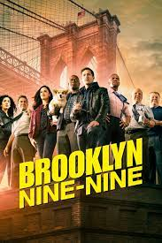

Tv Shows
I'm a big fan of anything comedy-related. All of my favorite TV shows are sitcoms; I love how easy they are to watch. Sitcoms don't demand your full attention, so I can have one on in the background while doing something else. I enjoy how sitcoms showcase comedy in various situations, from work to the characters' everyday lives. Some of my favorites include Brooklyn Nine-Nine, Superstore, How I Met Your Mother, and many more!
Apart from their ease of watching, I find sitcom characters hilarious. Even secondary or background characters can enhance scenes significantly. Another reason I love sitcoms is the funny scenes at the beginning of every episode, known as cold opens. I've spent countless hours watching Brooklyn Nine-Nine cold opens on YouTube. Secondary characters in Superstore often make scenes ten times funnier.
While I mostly watch sitcoms, one show that captured my attention was Manifest. Originally on NBC and later picked up by Netflix, Manifest is my favorite show. It's well-written, and the storyline is captivating. I appreciate how many little details eventually tie into much bigger things. These are all shows I love and will keep rewatching for years to come. The only downside is that all of these shows have officially ended, with no new seasons in sight. I'm open to any new TV show recommendations!
Overall, comedy plays a big role in my entertainment choices. Whether it's through sitcoms, stand-up specials, or comedy movies, I love anything that can make me laugh. It's a great way to unwind and enjoy some lighthearted entertainment after a long day.